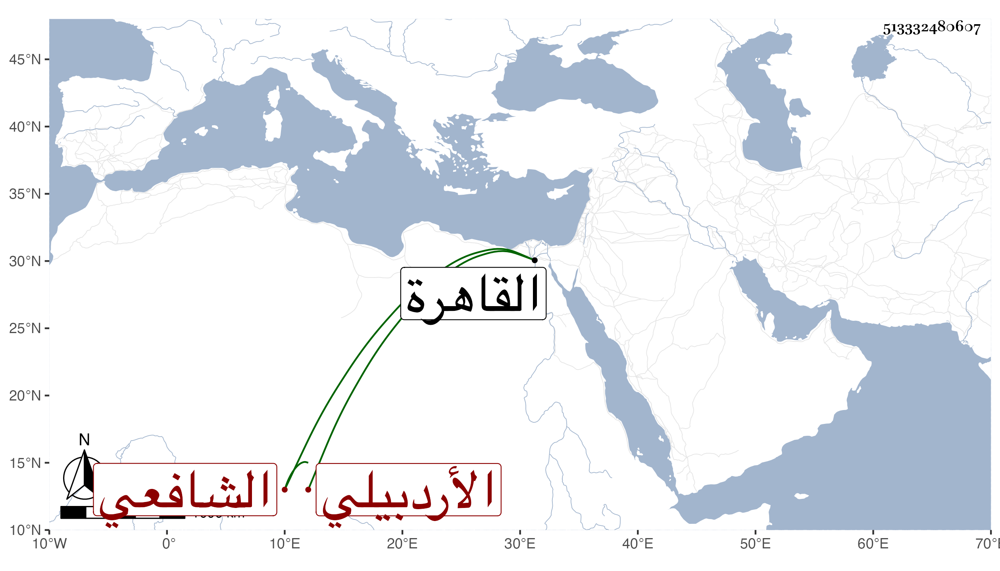

0902Sakhawi.DawLamic.ITO20230111-ara1.EIS1600.513332480607
Biography ID: 513332480607
إبراهيم بن محمد الأردبيلي ثم الشماخي الشافعي قدم القاهرة للحج في أول سنة خمس وستين وثمانمائة وهو ابن نحو من ستين سنة فأقام أشهرا وظهرت تمام فضيلته مع الدين والتواضع فقرئ عليه اليسير ثم حج ورجع مع الركب الشامي ثم عاد إلى بلاده وهو ممن يقصد فيها بالفتاوى والإقراء وله فيها مآثر وآخر العهد به في سنة سبع وسبعين .
